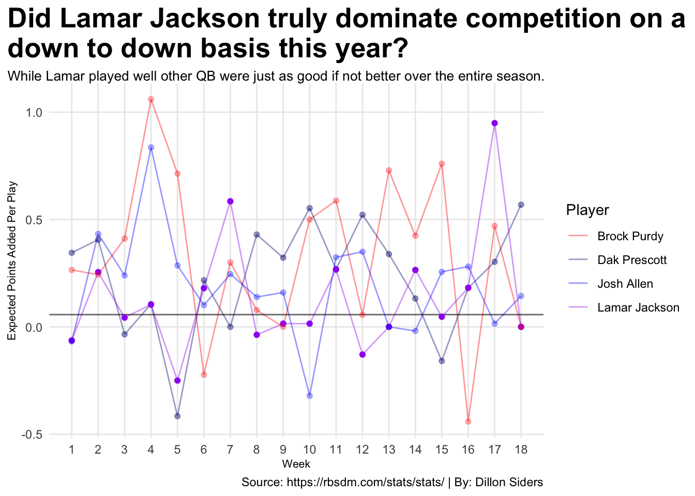
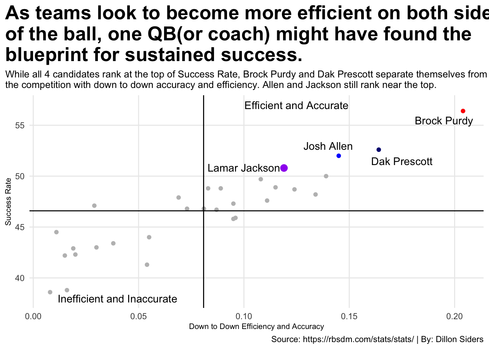

In a season where Lamar Jackson secured 49 of the 50 first place MVP votes the numbers show that this race was a lot closer than people think.
Author
Dillon Siders
Published
April 14, 2024
2023 was an interesting year for NFL offenses and QBs. After years of consistent improvement in QB play this year was different. This down year at the QB position contributed to one of the weirdest MVP races in recent memory.
Baltimore Ravens quarterback Lamar Jackson ended up winning the 2023 NFL MVP award in a landslide securing 49 of the 50 first-place votes. Jackson was critical to the Ravens’ success this year leading them to a 13-3 record, the best in the NFL, but he lacked some of the other criteria that past MVP had.
While you cannot question Jackson’s impact on the Ravens you can question if he was the “most valuable” player in the NFL. Multiple other QBs put up similar or superior individual stats but fell short in the team success category.
So, how do you evaluate which player brings more value than another? That’s the hard part. Dak Prescott, Josh Allen, and Brock Purdy all put up better numbers but had fewer wins, so were they actually more valuable?
A good starting point is comparing individual players’ stats to one another while taking team situation/roster construction into account. When doing this we see other QBs like Dak Prescott, Josh Allen, and Brock Purdy start to make better cases for themselves.
When comparing basic throwing stats we see Dak Prescott jumps out leading six of the eight stats. These stats also show how much of an outlier Jackson’s passing was for an MVP.
Obviously when comparing these QBs stats Lamar Jackson’s outlier athleticism must be considered. No other quarterback in the NFL brings the same rushing threat Jackson does. While Josh Allen is a great runner he still doesn’t compare to Jackson’s speed and agility.
When looking at how good of a passer a QB is base stats are not the only thing you want to look at because they do not tell the entire story. For this, we have other metrics like completed air yards and yards after catch. These help show how much assistance a quarterback gets in gaining their yards.
Code
qb_airyards_yac <-read_csv("qbs_airyards_yac.csv") |>mutate(Player=gsub("\\*","",Player)) |>mutate(Player=gsub("\\+","",Player))mvps <-c("Dak Prescott", "Lamar Jackson", "Josh Allen", "Brock Purdy")mvp_airyards_yac <- qb_airyards_yac |>filter(Player %in% mvps) |>select(Player, CAY, `CAY/Cmp`, `CAY/PA`, YAC, `YAC/Cmp`)mvp_airyards_yac |>gt() |>cols_label(CAY ="Completed Air Yards",`CAY/Cmp`="Completed Air Yards Per Completion",`CAY/PA`="Completed Air Yards Per Pass",YAC ="Yards After Catch",`YAC/Cmp`="Yards After Catch Per Completion" ) |>tab_header(title ="In a league becoming more and more pass happy not all passing yards are similar.",subtitle ="Which candidates get their yards through the air compared to teammates getting them after the catch." ) |>tab_style(style =cell_text(color ="black", weight ="bold", align ="left"),locations =cells_title("title")) |>tab_style(style =cell_text(color ="black", align ="left"),locations =cells_title("subtitle")) |>tab_source_note(source_note =md("**By:** Dillon Siders | **Source:** https://www.pro-football-reference.com/years/2023/passing_advanced.htm#")) |>tab_style(locations =cells_column_labels(columns =everything()),style =list(cell_borders(sides ="bottom", weight =px(3)),cell_text(weight ="bold", size=12))) |>opt_row_striping() |>opt_table_lines("none") |>tab_style(style =cell_text(color ="green", weight ="bold"),locations =cells_body(columns =c(CAY),rows = CAY ==2553)) |>tab_style(style =cell_text(color ="red", weight ="bold"),locations =cells_body(columns =c(CAY),rows = CAY ==1926)) |>tab_style(style =cell_text(color ="green", weight ="bold"),locations =cells_body(columns =c(`CAY/Cmp`),rows =`CAY/Cmp`==7.2)) |>tab_style(style =cell_text(color ="red", weight ="bold"),locations =cells_body(columns =c(`CAY/Cmp`),rows =`CAY/Cmp`==6.1)) |>tab_style(style =cell_text(color ="green", weight ="bold"),locations =cells_body(columns =c(`CAY/PA`),rows =`CAY/PA`==5.0)) |>tab_style(style =cell_text(color ="red", weight ="bold"),locations =cells_body(columns =c(`CAY/PA`),rows =`CAY/PA`==4.0)) |>tab_style(style =cell_text(color ="green", weight ="bold"),locations =cells_body(columns =c(YAC),rows = YAC ==1752)) |>tab_style(style =cell_text(color ="red", weight ="bold"),locations =cells_body(columns =c(YAC),rows = YAC ==2054)) |>tab_style(style =cell_text(color ="green", weight ="bold"),locations =cells_body(columns =c(`YAC/Cmp`),rows =`YAC/Cmp`==4.8)) |>tab_style(style =cell_text(color ="red", weight ="bold"),locations =cells_body(columns =c(`YAC/Cmp`),rows =`YAC/Cmp`==6.7)) |>tab_style(style =cell_text(color ="purple", weight ="bold"),locations =cells_body(columns =c(Player),rows = Player =="Lamar Jackson"))
In a league becoming more and more pass happy not all passing yards are similar.
Which candidates get their yards through the air compared to teammates getting them after the catch.
Here we see Dak Prescott make his case for best QB through the air in 2023 leading candidates in CAY while getting the least help per reception through YAC. On the flip side, Brock Purdy is the only candidate with 2000 plus YAC on the year.
The most important part of playing QB has to be accuracy. How can an offense function at full force with a signal caller who constantly misses open receivers or throws it to the defense?
Accuracy is not just a player’s completion percentage. There a plenty of outside factors that can worsen a QBs completion percentage that are uncontrollable like drops, throwaways and spikes. Stats like bad throw percentage(BT%) and on-target throw percentage(OnTgt%) can show you true accuracy taking uncontrolables into account.
Surprise, Surprise once again Dak Prescott outclasses his competition. In all seriousness Dak Prescott not only was the most accurate QB in 2023, but he also kept the ball out of harm’s way better than anyone close to the same amount of passing attempts. In comparison, the MVP had the worst BT% and OnTgt% of all the candidates.
While basic stats, air yards, YAC, and advanced accuracy are great starting points there is a better way to evaluate QB thanks to the modern, analytics-based league. For this we use the holy stat of NFL debate EPA/play.
EPA/play or expected points added per play is an advanced stat that evaluates a player’s down-to-down efficiency while factoring down, distance, and situation. This is calculated by taking the difference between expected points before the play and expected points after it’s over.
This is important for the MVP race because EPA/play has been crucial to predicting the MVP. The last time a QB won the MVP award and was not the league leader in EPA/play was in 2015 when Cam Newton won it for the Panthers.
Code
mvp_weekley_epa_advanced <-read_csv("MVP_weekly_epa_advanced.csv") |>mutate(`Success rate`=gsub("%","",`Success rate`)) |>mutate(`Success rate`=as.numeric(`Success rate`))dak <- mvp_weekley_epa_advanced |>filter(Player =="Dak Prescott")lamar <- mvp_weekley_epa_advanced |>filter(Player =="Lamar Jackson")josh <- mvp_weekley_epa_advanced |>filter(Player =="Josh Allen")brock <- mvp_weekley_epa_advanced |>filter(Player =="Brock Purdy")ggplot() +geom_line(data=mvp_weekley_epa_advanced, aes(x=Week, y=`EPA/play`, color=Player), alpha=.4) +geom_hline(yintercept =0.057, alpha = .6) +geom_point(data= dak, aes(x=Week, y=`EPA/play`), color="navy", alpha=.4) +geom_point(data= lamar, aes(x=Week, y=`EPA/play`), color="purple") +geom_point(data= josh, aes(x=Week, y=`EPA/play`), color="blue", alpha=.3) +geom_point(data= brock, aes(x=Week, y=`EPA/play`), color="red", alpha=.3) +scale_x_continuous(breaks =c(1,2,3,4,5,6,7,8,9,10,11,12,13,14,15,16,17,18)) +scale_color_manual(values=c("red", "navy", "blue", "purple")) +labs(x="Week",y="Expected Points Added Per Play",title ="Did Lamar Jackson truly dominate competition on a\ndown to down basis this year?",subtitle ="While Lamar played well other QB were just as good if not better over the entire season.",caption ="Source: https://rbsdm.com/stats/stats/ | By: Dillon Siders" ) +theme_minimal() +theme(plot.title =element_text(size =20, face ="bold"),axis.title =element_text(size =8),plot.subtitle =element_textbox_simple(size =10),panel.grid.minor =element_blank(),plot.title.position ="plot" )

In 2023, the EPA/play leader on the season was Brock Purdy, followed by Dak Prescott in 2nd, and Josh Allen in 3rd. If they rounded off the top 3 Lamar had to be 4th right? Wrong, Jackson came in at 8th behind Kirk Cousins(6th) and Jalen Hurts(7th).
Over the course of the entire season, Lamar Jackson was not even the most efficient player at his position let alone in the entire NFL. According to EPA/play it seems like Jackson’s MVP campaign was built on a blowout win against the 49ers in week 16 where he was slightly above average and the demolition against the Dolphins the next week where he was otherworldly.
While EPA/play by itself is a great measure when you combine it with others it paints an even clearer picture. When paired together EPA/play and completion percentage over expected(CPOE) can show you a quarterback’s down-to-down efficiency and accuracy.
Code
all_qb_season <-read_csv("all_qb_season_epa_advanced.csv") |>mutate(`Success rate`=gsub("%","",`Success rate`)) |>mutate(`Success rate`=as.numeric(`Success rate`))dak_epa <- all_qb_season |>filter(Player =="D.Prescott")lamar_epa <- all_qb_season |>filter(Player =="L.Jackson")josh_epa <- all_qb_season |>filter(Player =="J.Allen")brock_epa <- all_qb_season |>filter(Player =="B.Purdy")ggplot() +geom_point(data=all_qb_season, aes(x=`EPA+CPOE composite`, y=`Success rate`), color="grey") +geom_point(data=dak_epa, aes(x=`EPA+CPOE composite`, y=`Success rate`), color="navy") +geom_point(data=lamar_epa, aes(x=`EPA+CPOE composite`, y=`Success rate`), color="purple", size=3) +geom_point(data=josh_epa, aes(x=`EPA+CPOE composite`, y=`Success rate`), color="blue") +geom_point(data=brock_epa, aes(x=`EPA+CPOE composite`, y=`Success rate`), color="red") +geom_hline(yintercept =46.59333) +geom_vline(xintercept =0.08086667) +annotate("text", x=0.195, y=55.5, label="Brock Purdy") +annotate("text", x=0.175, y=51.5, label="Dak Prescott") +annotate("text", x=0.14, y=53, label="Josh Allen") +annotate("text", x=0.10, y=50.85, label="Lamar Jackson") +annotate("text", x=0.125, y=57, label="Efficient and Accurate") +annotate("text", x=0.04, y=38, label="Inefficient and Inaccurate") +labs(x="Down to Down Efficiency and Accuracy",y="Success Rate",title="As teams look to become more efficient on both sides \nof the ball, one QB(or coach) might have found the \nblueprint for sustained success.",subtitle="While all 4 candidates rank at the top of Success Rate, Brock Purdy and Dak Prescott separate themselves from \nthe competition with down to down accuracy and efficiency. Allen and Jackson still rank near the top.",caption ="Source: https://rbsdm.com/stats/stats/ | By: Dillon Siders" ) +theme_minimal() +theme(plot.title =element_text(size =20, face ="bold"),axis.title =element_text(size =8),plot.subtitle =element_text(size =10),panel.grid.minor =element_blank(),plot.title.position ="plot" )

Looking at the entire NFL it’s obvious that these four QBs were the right candidates for MVP. All four of them rank 1-4 in Success Rate. Where they separate themselves is efficiency and accuracy. Purdy blew every other QB out of the water. Prescott separated himself from 3rd and Purdy was still way ahead of him.
Jackson still ranked inside the top 7 in terms of EPA/play and CPOE, but he was worse than the other three candidates. While that is very good, even great it is not MVP level.